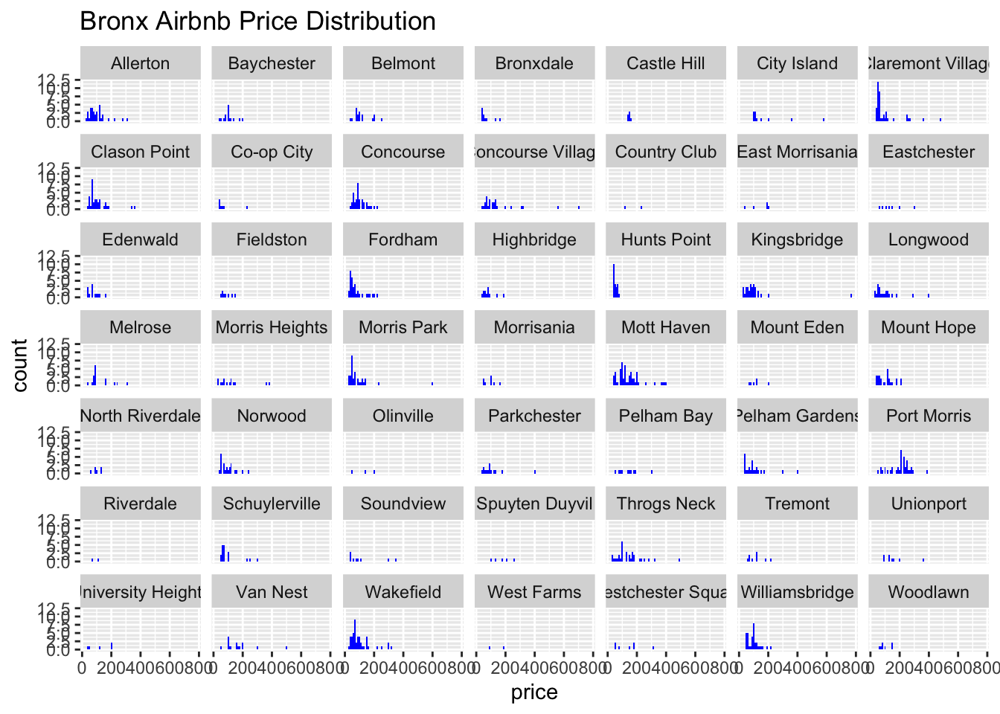

install.packages("ggridges")Lab 1: Airbnbs in NYC
Airbnb in NYC (or your city)
Airbnb has had a disruptive effect on the hotel, rental home, and vacation industry throughout the world. The success of Airbnb has not come without controversies, with critics arguing that Airbnb has adverse impacts on housing and rental prices and also on the daily lives of people living in neighborhoods where Airbnb is popular. This controversy has been particularly intense in NYC, where the debate been Airbnb proponents and detractors eventually led to the city imposing strong restrictions on the use of Airbnb. If you find this issue interesting and want to go deeper, there is the potential for an interesting project that brings in hotels (which have interesting regulations in NYC), hotel price data, and rental data and looks at these things together.
Because Airbnb listings are available online through their website and app, it is possible for us to acquire and visualize the impacts of Airbnb on different cities, including New York City. This is possible through the work of an organization called inside airbnb
Github Instructions
Before we introduce the data and the main assignment, let’s begin with a few key steps to configure the file and create a github repository for your first assignment. This is optional but I think it is a good idea to start getting familiar with github tools. These steps come from the happygitwithr tutorial.
- Start a new github repository in your account, clone it to your computer (using RStudio to start a new project from a repository or any other way)
- Update the YAML, changing the author name to your name, and Render the document.
- Commit your changes with a meaningful commit message.
- Push your changes to GitHub.
- Go to your repo on GitHub and confirm that your changes are visible in your Qmd and md files. If anything is missing, commit and push again.
Packages
We’ll use the tidyverse package for much of the data wrangling and visualisation, and the ggridges package to make a ridge plot in the last exercise. You may need to install ggridges if you haven’t already, you can do that using:
Then make sure to load both packages:
Data
The data for this assignment can be found on my github page by clicking here and downloading nycbnb.csv
If you are adventurous and want to perform this assignment for a different city you can choose one from inside airbnb). If you go that route, make sure to download the file listings.csv.gz for the city you selected (gz is an archive format which you should be able to expand), and you will only need to keep the following columns for this analysis:
nycbnb = nycbnb |>
select(
id,
price,
neighbourhood_cleansed,
neighbourhood_group_cleansed,
accommodates,
bathrooms,
bedrooms,
beds,
review_scores_rating,
number_of_reviews,
listing_url )You will also need to do some post-processing, including changing the price column from a string to a numerical variable. If you decide to go this custom route let me know and make sure to share your data, but I recommend sticking with the data I provided.
You can read the data into R using the command:
nycbnb = read_csv("/Users/nanafrimpong/Desktop/SPS Fall 2024/Data & Acq 607/Data 607 R File/Lab 1 Assignment/Lab 1 Assignment/nycbnb.csv")where you should replace /home/georgehagstrom/work/Teaching/DATA607/website/data/nycbnb.csv"nycbnb.csv with the local path to your file.
Important note: It is generally not wise to include datasets in github repositories, especially if they are large and can change frequently.
You can view the dataset as a spreadsheet using the View() function. Note that you should not put this function in your R Markdown document, but instead type it directly in the Console, as it pops open a new window (and the concept of popping open a window in a static document doesn’t really make sense…). When you run this in the console, you’ll see the following data viewer window pop up.
Exercises
Problem 1. How many observations (rows) does the dataset have? Instead of hard coding the number in your answer, use inline code.
glimpse(nycbnb)Rows: 37,765
Columns: 11
$ id <dbl> 2595, 5136, 6848, 6872, 6990, 7064, 7097, 7801, 8…
$ price <dbl> NA, 215, 81, 65, 65, NA, 205, 290, 170, 175, 90, …
$ neighborhood <chr> "Midtown", "Sunset Park", "Williamsburg", "East H…
$ borough <chr> "Manhattan", "Brooklyn", "Brooklyn", "Manhattan",…
$ accommodates <dbl> 1, 4, 3, 1, 1, 2, 2, 2, 5, 2, 2, 1, 2, 3, 2, 2, 2…
$ bathrooms <dbl> 1.0, 1.5, 1.0, 1.0, 1.0, NA, 1.0, 1.0, 1.0, 1.0, …
$ bedrooms <dbl> 0, 2, 2, 1, 1, 1, 1, 0, 1, NA, 1, 1, 1, 1, 1, 1, …
$ beds <dbl> 1, 2, 1, 1, 1, NA, 2, 1, 4, 1, 2, NA, 1, 2, 1, 1,…
$ review_scores_rating <dbl> 4.68, 4.75, 4.58, 5.00, 4.88, 4.91, 4.89, 4.90, 4…
$ number_of_reviews <dbl> 49, 4, 193, 1, 247, 13, 374, 12, 190, 58, 80, 0, …
$ listing_url <chr> "https://www.airbnb.com/rooms/2595", "https://www…There are 37,765 rows
Problem 2. Run View(nycbnb) in your Console to view the data in the data viewer. What does each row in the dataset represent?
Each row represent a specific observation of a listing in a neighborhood, where its borough,bathrooms, beds, price, accommodation, reviews, and number of reviews are associated with the listing.
Each column represents a variable. We can get a list of the variables in the data frame using the names() function.
names(nycbnb) [1] "id" "price" "neighborhood"
[4] "borough" "accommodates" "bathrooms"
[7] "bedrooms" "beds" "review_scores_rating"
[10] "number_of_reviews" "listing_url" You can find descriptions of each of the variables in the help file for the dataset, which you can find online at the inside airbnb data dictionary
Problem 3. Pick one of the five boroughs of NYC (Manhattan, Queens, Brooklyn, the Bronx, or Staten Island), and create a faceted histogram where each facet represents a neighborhood in your chosen borough and displays the distribution of Airbnb prices in that neighborhood. Think critically about whether it makes more sense to stack the facets on top of each other in a column, lay them out in a row, or wrap them around. Along with your visualization, include your reasoning for the layout you chose for your facets.
nycbnb |>
filter(borough == "Bronx") |>
ggplot(nycbnb, mapping = aes(x = price)
) + facet_wrap(~neighborhood) + geom_histogram(binwidth = 30, fill = "blue")Warning: Removed 359 rows containing non-finite outside the scale range
(`stat_bin()`).
Problem 4. Use a single pipeline to identity the neighborhoods city-wide with the top five median listing prices that have a minimum of 50 listings. Then, in another pipeline filter the data for these five neighborhoods and make ridge plots of the distributions of listing prices in these five neighborhoods. In a third pipeline calculate the minimum, mean, median, standard deviation, IQR, and maximum listing price in each of these neighborhoods. Use the visualization and the summary statistics to describe the distribution of listing prices in the neighborhoods. (Your answer will include three pipelines, one of which ends in a visualization, and a narrative.)
Problem 5. Create a visualization that will help you compare the distribution of review scores (review_scores_rating) across neighborhoods. You get to decide what type of visualization to create and which neighborhoods are most interesting to you, and there is more than one correct answer! In your answer, include a brief interpretation of how Airbnb guests rate properties in general and how the neighborhoods compare to each other in terms of their ratings.